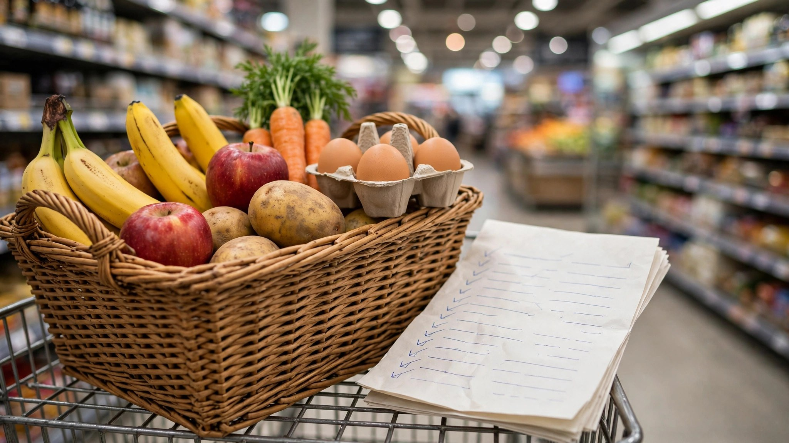

Save money on groceries and everyday spending

Saving money is mostly small decisions repeated every week: which bag to pick up, which brand to trust, whether to plan before you shop or decide in the aisle. No single trick transforms a grocery bill, but a few honest habits compound — and the ones that work are boring, checkable and repeatable. This collection gathers every savings guide we publish, from the ten-second division at the shelf to the weekly routine that ties it all together. Each guide is written in plain language, and each one ends with the checks we run ourselves.
1. All guides in this collection
- Price per unit: the bag math that saves money — The bigger bag is not always the better deal. Learn the ten-second division that tells you the truth at the shelf.
- Store brand vs name brand: what’s actually worth buying generic — Which groceries are worth buying generic, which are worth the name brand, and the unit-price check that settles it.
- How to save money on groceries: the 15-minute weekly routine — Fifteen minutes a week — plan before you shop, discipline at the store, and a three-minute reset at home.
- The pantry check that cuts your weekly bill — Check what you own before you buy anything new, and build the week’s meals from it.
- Cashback apps: how it actually works — How cashback actually tracks, when it pays, and why some purchases never earn a cent.
- Receipt-scanning apps: the honest walkthrough — Snap receipts, earn points: what receipt apps really pay and where the catches hide.
2. How to use this collection
Start with price per unit — it is the one skill behind everything else here, and it takes ten seconds at the shelf. Then read store brand vs name brand, which shows where generic swaps save real money and where the name brand is worth it. Put both into the 15-minute weekly routine: plan before you shop, stay disciplined at the store, and reset at home in three minutes. Add the pantry check so the week’s meals start from what you already own. Cashback and receipt apps sit on top of all of it — small amounts, slow to add up, and only worth it once the basics are in place. Our guides to cashback apps and receipt-scanning apps explain what they actually pay and where the catches hide.
3. The checks behind every guide
Every guide in this collection comes from the same method: we walk the flow, read the terms and check the numbers before we write about it. Savings claims are kept modest and checkable — a unit price you can verify on the shelf label, a routine you can time yourself — and nothing here is a promise that your bill will fall by a fixed amount. Rates, prices and availability change, and every app or program has its own terms. Our checking method explains the full process, including the offer we blacklisted after walking it.
Key takeaways
- Price per unit is the one skill behind every other savings habit — learn it first.
- A short weekly routine beats a long list of tips you never use.
- Apps add small amounts on top of the basics — they never replace them.
Pick one app that fits your phone, install it, and open it once so it counts — every app walked by us first.
Check today’s app picksSponsored link. For adults 18+. Availability and rewards vary by provider, country and device — nothing is guaranteed, always read the terms.
Quick questions
What is the single most useful savings skill?
Price per unit: divide the price by the amount and compare that number, not the sticker price. It takes ten seconds at the shelf and it settles most brand and size arguments on the spot.
Do store brands really save money?
Often, yes — store brands are typically 20 to 30 percent cheaper than name brands on staples like flour, rice, canned goods and frozen vegetables. But the honest answer is always the same: compare the unit price, because the gap varies by item and by store.
Are cashback and receipt apps worth it?
They pay small amounts, slowly, and only on purchases you were already making. Treat them as a small bonus on top of the basics — planning, unit prices and the pantry check — not as a source of income.